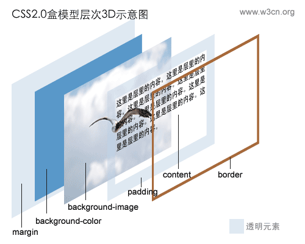

CSS定位
定位一直是WEB标准应用中的难点，如果理不清楚定位那么可能应实现的效果实现不了，实现了的效果可能会走样。如果理清了定位的原理，那定位会让网页实现的更加完美。
Table of Contents
1 定位的定义
以CSS中关于定位的内容是：position:relative | absolute | static | fixed
- static 没有特别的设定，遵循基本的定位规定，不能通过z-index进行层次分级。
- relative 不能脱离文档流，参考自身静态位置通过 top,bottom,left,right 定位，并且可以通过 z-index 进行层次分级。
- absolute 脱离文档流，通过 top,bottom,left,right 定位。选取其最近的父级定位元素，当父级 position 为 static 时，absolute元素将以 body 坐标原点进行定位，可以通过 z-index 进行层次分级。
- fixed 固定定位，这里它所固定的对象是可视窗口而非是 body 或是父级元素。可通过 z-index 进行层次分级。
CSS中定位的层叠分级：z-index:auto | number
- auto 遵从其父对象的定位
- number 无单位的整数值，可为负数。
2 position:static
元素的 position 属性默认值为 :static，即该元素出现在文档的常规位置，不会重新定位。 通常此属性值可以不设置，除非是要覆盖之前的定义。
#div-1 {
position:static;
}
3 position:relative
设置了 position:relative，便可以结合 top、bottom、left、right 的属性来偏移其文档的常规位置。 例如将 div-1 向下移动 20 像素、向左移动 40 像素：
#div-1 {
position:relative;
top:20px;
left:-40px;
}
注意 div-1 未被移动之前的地方，现在多了一点空隙，紧接着 div-1 的元素(div-after)却没有被移动，事实上即使 div-1 被移动了， 它仍占据原始位置 。 貌似 position:relative 用处不大（我倒觉得这点很有用），但在后面的内容中显得尤为重要。
4 position:absolute
设置了 position:absolute，即绝对定位，便可以将元素放在文档中任何想放的位置。 例如将 div-1a 放置在右上角：
#div-1a {
position:absolute;
top:0;
right:0;
width:200px;
}
5 可以位移的元素（相对定位）
6 可以在任意一个位置的元素（绝对定位）
7 被关联的绝对定位
上面说的是单一的绝对定位，而在实际的应用中我们常常会需要用到一种特别的形式。即希望定位元素要有绝对定位的特性，但是又希望绝对定位的坐标原点可以固定在网页中的某一个点，当这个点被移动时绝对定位元素能保证相对于这个原坐标的相对位置。也就是说需要这个绝对定位跟着网页移动，并且是固定在网页的某一个位置。通常当网页是居中形式的时候这种效果就会显得特别的重要。要实现这种效果基本方式就是为这个绝对定位的父级设置为相对定位或是绝对定位。那么绝对定位的坐标就会以父级为坐标起始点。 虽然是如此，但是这个坐标原点却并不是父级的坐标原点，这是一个很奇怪的坐标位置。我们来看一下模型图示：

我们看到，这个图中父级为黑灰色区块，子级为青色区块。父级是相对定位，子级是绝对定位。子级设置了顶点位移50个像素，左倾位移50个像素。那么我们看，子级的坐标原点并不是从父级的坐标原点位移50个像素，而是从父级块的padding左上边缘点为坐标起始点（即A点）。而父级这里如果要产生位置移动，或是浏览器窗口大小有所变动都不会影响到这个绝对定位元素与父级的相对定位元素之间的位置关系。这个子级也不用调整数值。 这是一种很特别并且也是非常实用的应用方式。如果你之前对于定位的控制并不自如的话，相信看完这里对定位的解释一定可以把定位使用得随心所欲。
8 总在视线里的元素（固定定位）
9 CSS2 盒模型
盒模型主要定义四个区域：内容（content）、边框距（padding）、边界（border）、边距（margin）。 对于初学者，经常会搞不清楚margin，background-color，background-image，padding，content，border之间的层次、关系和相互影响。这里提供一张盒模型的3D示意图：

10 一切皆为框
div、h1 或 p 元素常常被称为块级元素。这意味着这些元素显示为 一块内容 ，即“块框”，与之相反，span 和 strong 等元素称为“行内元素”，这是因为它们的内容显示在行中，即“行内框”。 您可以使用 display属性 改变生成的框的类型。这意味着，通过将 display 属性设置为 block，可以让行内元素（比如 <a> 元素）表现得像块级元素一样。还可以通过把 display 设置为 none，让生成的元素根本没有框。这样的话，该框及其所有内容就不再显示，不占用文档中的空间。 但是在一种情况下，即使没有进行显式定义，也会创建块级元素。这种情况发生在把一些文本添加到一个块级元素（比如 div）的开关，即使没有把这些文本定义为段落，它也会被当作段落对待：
<div> some text <p>Some more text.</p> </div>
在这种情况下，这个框称为无名块框，因为它不与专门定义的元素相关联。
11 CSS定位机制
CSS有三种基本的定位机制：普通流、浮动和绝对定位。 除非专门指定，否则所有框都在普通流中定位。也就是说，普通流中的元素的位置由元素在 (X)HTML 中的位置决定。 块级框从上到下一个接一个地排列，框之间的垂直距离是由框的垂直外边框计算出来。 行内框在一行中水平布置。可以使用水平内边框、边框和外边框调整它们的间距。但是，垂直内边距、边距和外边距不影响行内框的高度。由一行形成的水平框称为 选框（Line Box） ，行框的高度总是足以容纳它包含的所有行内框。不过，设置行高可以增加这个框的高度。
12 CSS position 属性
通过使用 position 属性 ，我们可以选择 4 种不同类型的定位，这会影响元素框的生成的方式。 position 属性值的含义：
- static
元素框正常生成，块级元素生成一个矩形框，作为文档流的一部分，行内元素则会创建一个或多个行框，置于其父元素中。
- relative
元素框偏移某个距离。元素仍保持其未定位前的形状，它原本所占用的空间仍保留。
- absolute
元素框从文档流完全删除，并相对于其包含块定位。包含块可能是文档中的另一个元素或者是初始包含块。元素原先在正常文档流中所占的空间会关闭，就好像元素原来不存在一样。元素定位后生成一个块级框，而不论原来它在正常流中生成保种类型的框。
- fixed
元素框的表现类似于将 position 设置为 absolute，不过其包含块是视窗本身。